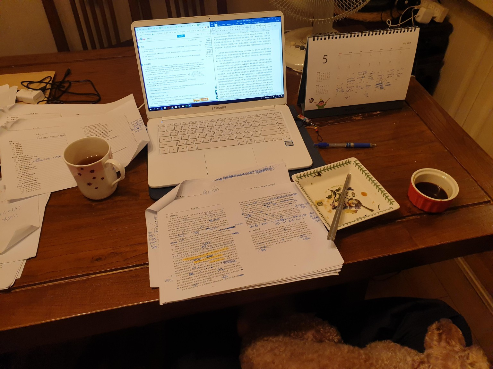
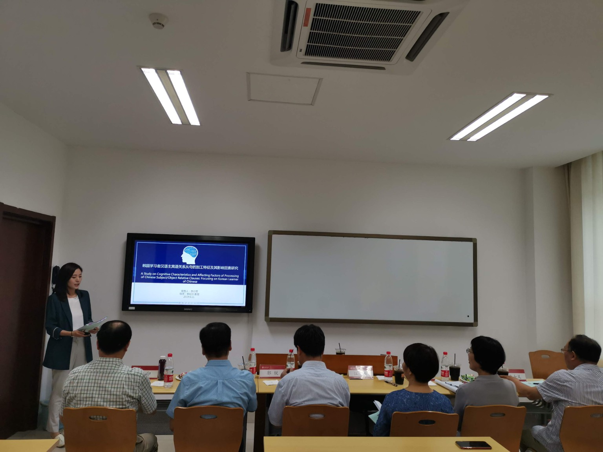
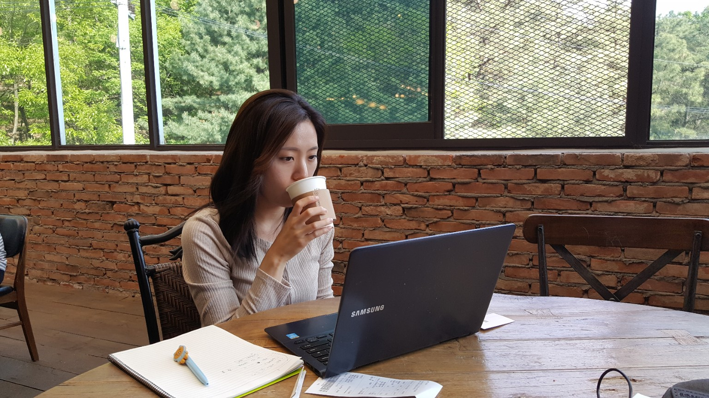
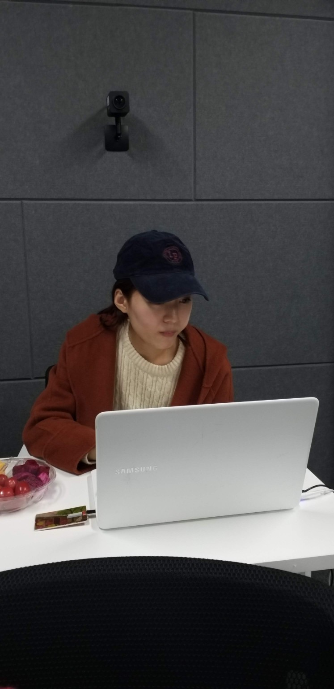
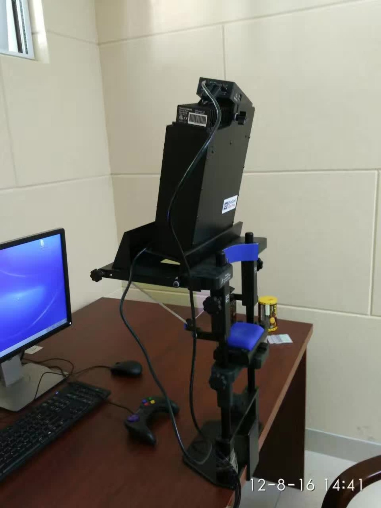
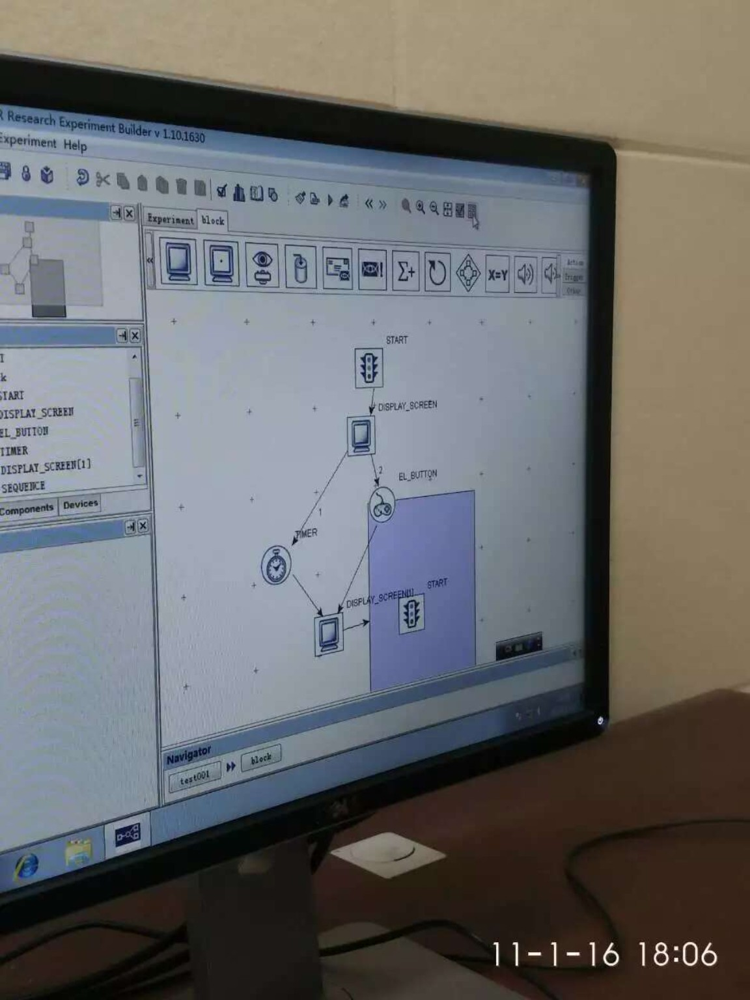
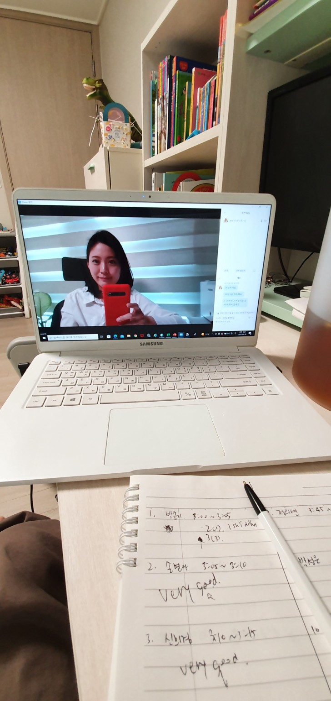
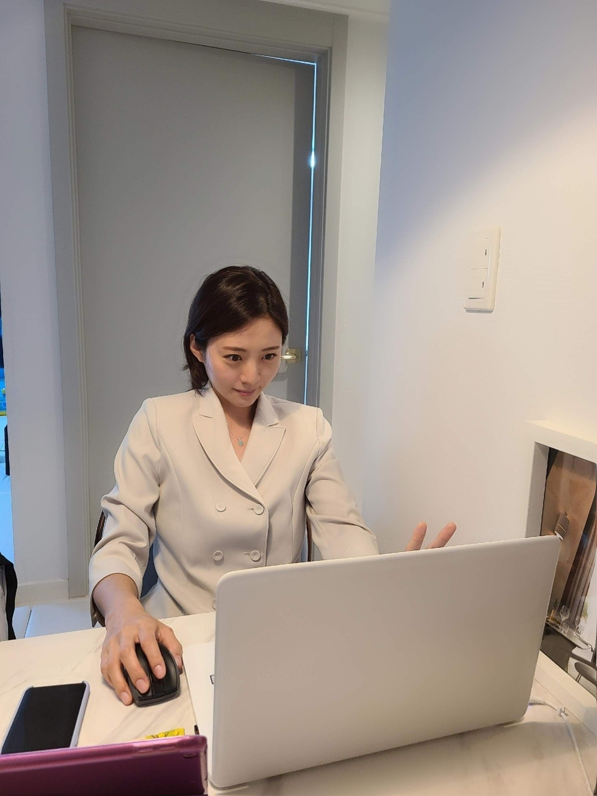
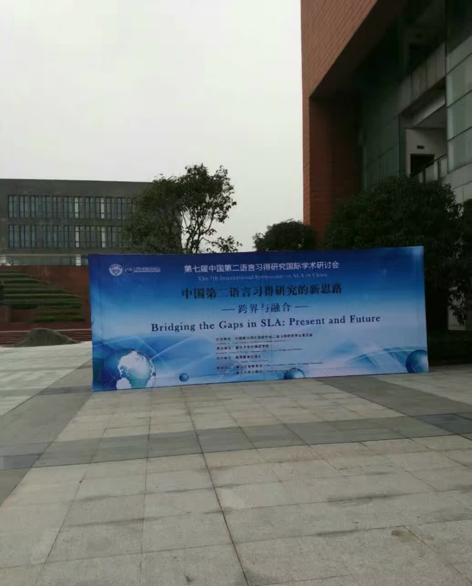
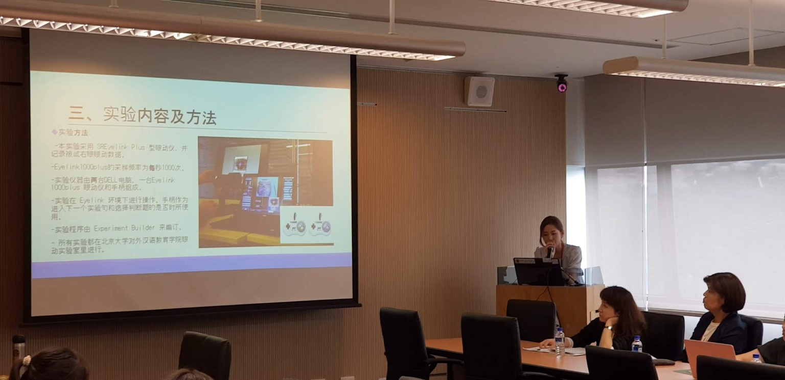

Platform Overview
Chinese Flow Lab은 AI API와 학습자 데이터를 활용하여 중국어 학습자의 수준과 오류 유형에 맞춘 학습 경험을 제공하는 AI 기반 중국어 학습 및 연구 플랫폼입니다.
본 플랫폼은 사전 진단, 맞춤형 연습, 플립드러닝 영상, AI 작문 피드백, 교육용 텍스트 난이도 분석, 수준별 읽기 자료 추천을 통합하여 학습자 중심의 중국어 학습 환경을 구축합니다.
AI Learning Engine
Chinese Flow Lab은 AI API와 대규모 언어모델(LLM)을 활용하여 학습자의 중국어 작문, 오류 수정, 표현 확장, 학습 경로 설계를 지원합니다. 또한 설명가능 인공지능(XAI)의 관점에서 AI가 제공하는 피드백, 읽기 자료 추천, 학습 경로 제안의 근거를 함께 제시합니다.
AI-Based Writing Feedback
학습자의 중국어 작문을 분석하고 문법, 어휘, 표현, 담화 구성에 대한 AI 기반 피드백과 수정 방향을 제공합니다.
Personalized Practice
사전 진단 결과와 오류 유형을 바탕으로 학습자별 맞춤형 연습문제를 제공합니다.
Prompt-Based Revision
학습자가 작성한 프롬프트, AI 생성 결과, 수정안, 최종 산출물을 축적하여 LLM 활용 과정과 작문 발달을 분석합니다.
Explainable AI (XAI)
AI가 왜 특정 피드백을 제공했는지, 왜 특정 읽기 자료를 추천했는지, 어떤 근거로 학습 경로를 제안했는지를 설명합니다.
Text Difficulty Model
Chinese Flow Lab은 자체 개발한 중국어 교육용 텍스트 난이도 측정 모델 (이윤영, 2025, 「맞춤형 학습을 위한 중국어 교육용 텍스트의 언어적 난이도 측정 연구」) 을 기반으로 합니다.
본 모델은 교육용 텍스트의 어휘, 문법, 관용표현, 문장 길이 등의 언어적 요소를 분석하여 난이도를 계량적으로 산출하며, AI 기반 학습자 진단 결과와 연계하여 수준별 읽기 자료 추천 및 개인 맞춤형 학습 경로 설계에 활용됩니다.
또한 XAI 관점에서 AI가 특정 읽기 자료를 추천한 이유를 어휘 난이도, 문법 난이도, 관용표현, 문장 길이 등의 요소를 중심으로 설명합니다.
Text Difficulty Analysis + Personalized Reading Recommendation
Linguistic Features → Difficulty Score → Learner Matching → Explainable Recommendation
Two-Track Structure
Learning Track
사전 진단, 학습 프로필, 플립드러닝 영상, 맞춤형 연습문제, AI 작문 피드백을 통해 학습자의 중국어 듣기·쓰기 학습을 지원합니다.
Research Track
프롬프트, AI 생성 결과, 초안, 수정안, 최종안을 축적하여 중국어 학습자의 의미 구성 과정, LLM 활용 양상, 작문 발달을 연구합니다.
Learning & Research Flow
Chinese Flow Lab은 학습자의 진단에서 출발하여 AI 피드백, 맞춤형 연습, 텍스트 추천, 설명 가능한 학습 지원, 학습 데이터 분석으로 이어지는 순환형 학습 구조를 지향합니다.
Research Foundation
Chinese Flow Lab은 응용언어학, 제2언어습득, 중국어교육 연구를 기반으로 구축되었습니다. 특히 학습자 입력과 산출, 프롬프트 활용, AI 피드백, XAI 기반 추천 설명, 텍스트 난이도, 작문 발달 과정을 통합적으로 분석하여 데이터 기반 맞춤형 중국어 교육의 가능성을 탐색합니다.
Research & Academic Activities










